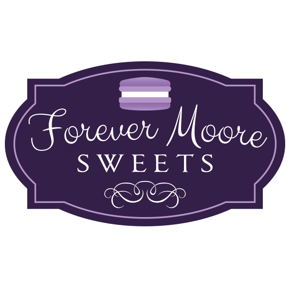

Welcome!!!
Hello!! My name is Deborah Moore and I live in Everett with my husband. As you can see, my favorite color is purple and I like to use it wherever I can. Seeing the color purple makes me happy. When you see me in public, you will recognize me because I am often wearing something purple. I have been a student at Edmonds College since 2018 where I have been enrolled in both Computer Science and Computer Information Systems Programs.
At Edmonds College, I am working on adding training to my current engineering degree in hopes of finding a new job. I believe that education is important and we should never stop learning. I also believe that we should immerse ourselves in the things we love to do.
 I enjoy baking so I started my own home-based bakery business, Forever Moore Sweets . I specialize in cakes, cupcakes, cookies, and decorated cookies. Running a business is teaching me a lot. My dream is to someday have a food truck and a brick & mortar building that I own.
As part of my business, I have been learning to use a 3D printer to create my own cookie cutters. I have quite the cookie cutter collection already but I love the process of learning new technologies and putting them to good use. Also, since I love coffee so much, I am learning to roast my own coffee beans.
 I am also active in my church Trinity Episcopal in Everett, where I am involved with many groups, activities and fundraisers. During this time of COVID-19, I have not been able to attend church physically but I stay in contact with many of my church family members.
I am also active in my church Trinity Episcopal in Everett, where I am involved with many groups, activities and fundraisers. During this time of COVID-19, I have not been able to attend church physically but I stay in contact with many of my church family members.
Thank you for visiting my very purple website and learning a few things about me.